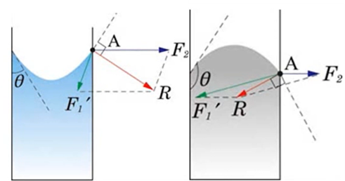
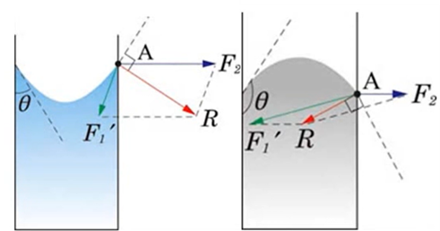
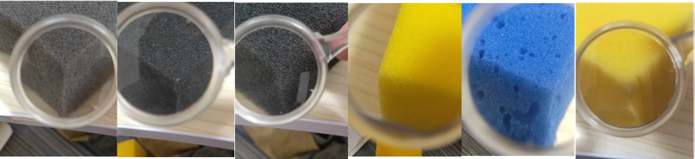
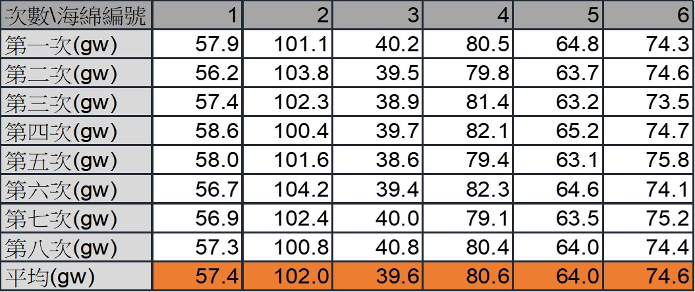
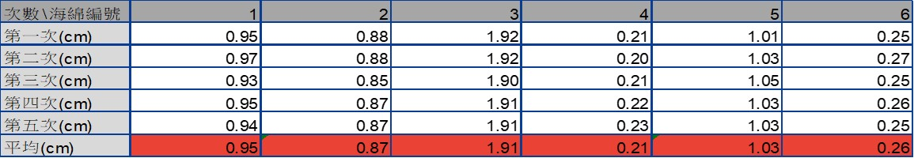
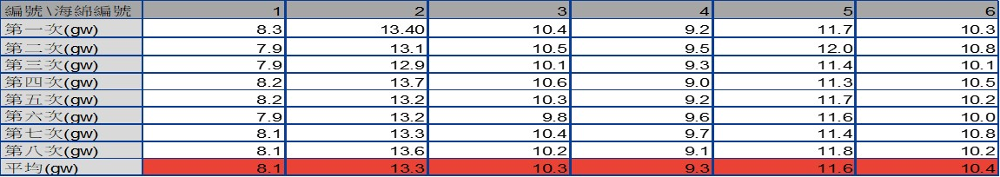
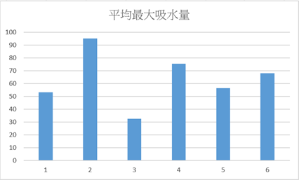
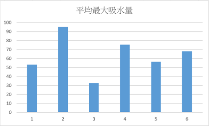
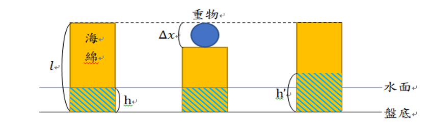

閱讀心得作品
作品標題
從文章透析時代——《傾城之戀》
中文書名及相關資訊
中文書名：傾城之戀：短篇小說集．一，一九四三年
書籍ISBN：9789573335139
書籍作者：張愛玲
出版單位：皇冠文化出版有限公司
出版年月：2020年2月
版 次：二版
圖書作者與內容簡介
一九二零年九月三十日，張煐誕生於世。二十歲那年，她的一系列小說使當時的文壇為之驚艷。本書為張愛玲百歲誕辰之紀念版，收錄了八篇張愛玲膾炙人口的小說，以上海、香港和南京為背景，在荒涼的氛圍中鋪張男女的情感糾葛以及時代之繁華與傾頹。
內容摘錄
後來他關上了燈，黑暗，從小屋裏暗起，一直暗到宇宙的盡頭，太古的洪荒——人的幻想，神的影子也沒有流過蹤跡的地方，浩浩蕩蕩的和平與寂滅。（p.97）
他們有的是青春——孩子一個個的被生出來，新的明亮的眼睛，新的紅嫩的嘴，新的智慧。一年又一年的磨下來，眼睛鈍了，人鈍了，下一代又生出來了。這一代便被吸收到硃紅酒金的輝煌的背景裏去，一點點的淡金便是從前的人的怯怯的眼睛。（p.184）
你……你如果認識從前的我，也許你會原諒現在的我。（p.198）
我的觀點
用了約莫整個月的時間，細品張愛玲的文筆，發自內心的認為，一切是值得的。
一九四三，乘載著戰爭的壓抑，乘載著暗黑的氛圍，那是當時的中國。本書的八篇作品是以香港及上海為背景，向讀者傾訴一段又一段的人性及現實：未曾想過成為擊鐘陳鼎之人，卻深陷其中、無法自拔的《第一爐香》；無知而害死一條生命的《第二爐香》；偌大的空房，僅剩孤獨和詈辱伴我的《茉莉香片》；禁忌之戀，終將無果的《心經》；曇花一現，相遇似夢，美好卻又短暫的《封鎖》；戰爭的殘酷，透析了你對我的好，患難下，那才是最真實彼此的《傾城之戀》；理想與現實違背，潮流與價值碰撞的《琉璃瓦》以及不公造就癲狂，一切終將毀滅的《金鎖記》，我認為這八篇故事，除了是時代的體現，其中也包含了張愛玲對於身平的部分詮釋。
閱讀完全書後，不難發現，張愛玲文筆下的女性，大多是卑微的，不論是葛薇龍，亦或者是白流蘇和曹七巧，她們均有一共通之處，那便是最終都走向婚姻。薇龍在故事的尾聲嫁給了喬琪喬，為了這個男人她甚至付出了自己的貞潔；曹七巧在操弄和迫使下，雖是嫁入豪門，但也是嫁給一殘疾的人，冷嘲熱諷、人性黑暗，最終成為了癲狂，成為了那遙不可及的黑；白流蘇在飽受凌辱後，選擇走上離婚這條路，然而等待她的並非關懷及溫暖，等待她的僅剩下利用和譏諷。令人痛心的是，這些並非虛構，而是時代的縮影。在那個女性受教權尚未被重視的年代，難以憑藉著學習闖出自己道路的年代，婚姻彷彿是種歸屬，講求門當戶對，講求重金禮聘，就連這最後的歸屬，都得在娘家的同意下才得以促成，這樣未免太過殘酷了些，張愛玲的文章我認為就是對這不公氛圍的控訴，警醒世人，生而為人，就應平等的價值。
社會的抑鬱，令人窒息到想逃離，我認為《封鎖》正是張愛玲因此所虛構出來的烏托邦，吳翠遠與呂宗楨在那短暫的封鎖內，拋棄了這個社會所給予他們的身分，盡情暢談，羞澀的情感悄然溜入心中，害羞所泛起的微紅，彷彿美酒薰陶似的，輕浮卻又扣人心弦，在這一刻積累已久的壓抑，如同潮水般傾洩，好先生、好老師……，不論哪一種好，都是社會所賦予他們的好，所賦予他們的枷鎖，在這一刻，在這只屬於他們兩人的一刻，那世俗的眼光，或許都不再重要了。「叮玲玲玲玲玲」，再次響起，世界又重新恢復運轉，轉瞬間，男子已回到了那最初屬於他的位置，再一次的回到了不曾認識彼此的樣子，方才的美好，方才的深情，如同故事般的完美，那時的相遇，或許只是場空想，或許只是場不曾為現實的白日夢。
我相信張愛玲也能夠理解、體會，我們都曾嘗試在這片抑鬱中尋找著喘息，所以才創造了這片美好。年齡增長，那些責任、義務，在這無形中禁錮了我們，那些自由之心，或許早已被抹煞，保有希望，可能已是種奢求，但我認為那些渺茫的希望，才是你我追尋生存的意義，也說不定。
而《茉莉香片》我則覺得是張愛玲對於走向另一條道路的自己的描繪，同樣的豪華宅邸、富貴生活，同樣的殘破童年，但張愛玲走出自己的人生高峰，聶傳慶則是墮入深淵。在聶傳慶的心中，他怨恨著那些守舊的觀念及長輩，造就了他這悲慘的一生；他怨恨著言丹朱，因為她成為了那個他最夢寐以求卻無法成為的自己；他怨恨著這個世界，卻不曾想過改變，放任自己糜爛，不斷的怨天尤人，彷彿這世界的不幸全由他一人承擔似的，咒怨著、辱罵著這個世界是多麼的不公。但能因此改變什麼嗎？他可曾想過父親、繼母即便對他百般凌辱，卻又不願讓他放棄學習的用意為何？他可曾想過靠著自己的雙手，不斷地努力學習，來改變他這崎嶇蜿蜒的一生，走向屬於他的康莊大道嗎？不，他都未曾想過，只是不停的埋怨自己的不幸。在課堂上遭到言子夜叱罵的那刻起，對他來說，宛如世界末日，在那一刻，他蛻變了。但他並非成為破繭而出之蝶，而是成為了惡魔，用盡所有的惡意去報復這個社會，報復那些他所羨慕之人，而那人便是言丹朱，那個在這世上除馮碧落之外唯一對他釋出善意的女子。所幸的是，他失敗了，而他也斷送了自己所擁有的一切。
出生是我們所無法決定的，有的人一出生便是榮華富貴，也有的人出生便是一貧如洗，但我們能決定的是，我們想成為怎樣的自己，即便出生上流，也有可能陷落底層，即便出生萬丈深淵，也有可能攀上那些不曾想過能觸及的高峰，願每個人都能成為更好的自己，願你我的人生如同星空般璀璨斑斕。
我認為張愛玲的文章，都是發人深省的。許多作家都曾不諱言的表示他們的寫作都是受到「張派」文風的影響，我認為她的文風非但只是華麗的詞藻，更多的是對於時代那最寫實的陳述。美好僅存於童話，悲劇才是這社會的常態，當然並不是對這世間不抱希望，而是應該誠實面對每個挑戰及難題，或許這也是張愛玲想表達給世人的。
討論議題
從過往至今，你認為女性權益是否有得到提升？
男女之間有辦法達到真正的平等嗎？
賽題九-海綿-決賽實驗數據及結論
賽題研析
海綿是一種多孔材料，本實驗所使用的海綿是由塑膠材料發泡而成的。許多的細孔讓海綿接觸到水面時會因為毛細現象因而吸入海綿之內。然而不同種類的海綿具有不同大小的孔隙且與水分子間的作用力的大小都不同，所以不同種類的海綿其吸水速率或是吸水量......等性質，都會受到這些海綿本身的性質影響。
然而這些複雜的物理性質會共同影響海綿在吸水方面的數據，但是有些性質的測量的難度不低，例如:海綿孔隙的平均大小、孔隙、與水分子間的吸引力……等。可能需要借助顯微鏡等精細的實驗器材才能確定這些性質，這種方法似乎有點過於麻煩了。因此想說在吸水量、壓縮深度這些相對起來測量難度比較低的物理量之間是否存在著某種關係，讓人知道了其中一種數據後便可以推敲出另外一種的數據。
我們組別想要了解海綿受重物擠壓下的形變量與吸水量，測量不同重量下兩組實驗的差異，並且將四組實驗做數據分析，比較兩組實驗數據的差異。
科學原理
-
內聚力與附著力
- 內聚力:指的是同類分子間的作用力，在這邊就是水分子之間的作用力，方向對稱為液體分布。
- 附著力:指的是異類分子間的作用力，在這邊就是水分子與海綿間的作用力，方向與接觸面垂直。
作用力的大小與分子間距離有關，當分子間距小於r0時，作用力呈現斥力，大於r0時則表現為引力。 圖1-1
圖1-1 -
表面張力
 圖1-2因為液體表面的液體蒸發，表面分子稀疏，導致表面的水分子間距大，分子間作用力表現為引力，使液面產生收縮的效果。此作用力會使得表面形成表面膜，並會抵抗表面膜的擴張，也就是這個作用力會使得液體表面積縮成最小，所以由此可知，表面張力的定義為單位長度的拉力。 表面張力T=拉力F/單位長度ΔL (牛頓/公尺)，水的表面張力約為0.07275N/m，算是表面張力相當大的液體。
圖1-2因為液體表面的液體蒸發，表面分子稀疏，導致表面的水分子間距大，分子間作用力表現為引力，使液面產生收縮的效果。此作用力會使得表面形成表面膜，並會抵抗表面膜的擴張，也就是這個作用力會使得液體表面積縮成最小，所以由此可知，表面張力的定義為單位長度的拉力。 表面張力T=拉力F/單位長度ΔL (牛頓/公尺)，水的表面張力約為0.07275N/m，算是表面張力相當大的液體。 -
浸潤與非浸潤
當液滴位於一個表面時固、液、氣表面的交點受到液體內部的內聚力與跟接觸面的附著力，當兩個力的大小不同就會造成浸潤與非浸潤情形。- 內聚力大於附著力:兩者間的合力指向液滴，造成液滴收縮，此時的θ(接觸角)大於90度，這種狀況稱為非浸潤或疏水。
- 內聚力小於附著力:合力方向指向接觸面，造成液滴有攤平在表面的趨勢，此時θ小於90度，這種狀況稱為浸潤或潤濕。
 圖1-3
圖1-3 -
毛細現象
當容器進入液內時，接觸的地方會有些微彎曲，此現象就是毛細現象。 固、液、氣的交界處在容器上，受到內聚力(F1)與接觸力(F2)，當F2 > F1/√2 時兩力合力指向液體外，如圖1-4左側。當F2 < F1/√2 時兩力合力指向液體內，如圖1-4右側。 由於液面需垂直於合力方向，所以這樣會造成液面的上凸或下凹(如圖1-5)。如果F2 > F1/√2 ，力平衡後會讓接觸角θ小於90度，因此作用在管壁一周的表面張力會有一個向上的分力，造成管內液體升高。如果F2 < F1/√2 ，會讓接觸角θ大於90度，因此作用在管壁一周的表面張力會有一個向下的分力，造成管內液體降低。 圖1-4圖1-5若想知道毛細管上升或下降的高度，可由力學分析來求得，液柱受到向上的的力為，表面張力在圓周上的鉛直分力(Tcosθ*2πr)、底部壓力向上的總力(P液*πr2)，受到向下的力為，重力(mg)、大氣壓力向下的總力(P氣*πr2)。則可列出方程式為:Tcosθ*2πr + P液*πr2= mg+ P氣*πr2。又P氣= P液，m=hπr2ρ。得解h=2Tcosθ/(ρgr) 若接觸角大於90度則cosθ小於0，h也小於 0，代表液柱下降。
圖1-4圖1-5若想知道毛細管上升或下降的高度，可由力學分析來求得，液柱受到向上的的力為，表面張力在圓周上的鉛直分力(Tcosθ*2πr)、底部壓力向上的總力(P液*πr2)，受到向下的力為，重力(mg)、大氣壓力向下的總力(P氣*πr2)。則可列出方程式為:Tcosθ*2πr + P液*πr2= mg+ P氣*πr2。又P氣= P液，m=hπr2ρ。得解h=2Tcosθ/(ρgr) 若接觸角大於90度則cosθ小於0，h也小於 0，代表液柱下降。 圖1-6註解:
圖1-6註解:- h:液柱高度差
- T:表面張力
- Θ:接觸角
- m:液柱質量
- g:重力加速度
- P液:液柱底部壓力
- P氣:大氣壓力
- r:液柱半徑
- ρ:液柱密度
物理模型
-
推論
我們將海綿放入水中後發現不管放置多久，都只會有浸入水面下附近 的部分有吸水，就算將海綿全部浸入水面後，拿起來時在肉眼可見的粗孔隙部分內的水，大部分會流失，但是如果此時用力擠壓海綿會發現內部確實有很多水分。因此我們推論海綿材料的內部不只有肉眼可見的粗孔隙，還有許多不連續的細小孔隙，而不是只有靠肉眼可見的粗孔隙來吸水，這也能解釋為什麼將海綿拿起後，內部的水分不會按照毛細現象的理論高度而直接滴落。 -
模型
將海綿置入水面後利用重物使其壓縮，再將重物移除，此時海綿會恢復形狀，由於海綿的恢復力會使得海綿內部具有負壓，因此可以將壓縮前碰觸到水面的海綿內部浸潤，這樣即使是恢復後沒有接觸到水面的海綿也可以吸到水。因此海綿的水量應該要與形變量及本身吸水的能力有關。
實驗設計與規劃
-
問題與假設
- 問題:吸水量是否與形變量與自身吸水程度有關？
- 假設:吸水量正相關於形變量與自身吸水能力。
控制變因- 環境溫度
- 環境濕度
- 海綿體積
- 海綿表面積
- 盆中水量
操作變因- 實驗(一):海綿種類
- 實驗(二):海綿種類
- 實驗(三):施加外力
- 實驗(四):施加外力
- .
應變變因- 實驗(一):海棉乾重
- 實驗(二):最大吸水量
- 實驗(三):形變量
- 實驗(四):吸水量
- .
-
實驗設計
實驗器材:海綿*6(編號1到6)、大臉盆*1、塑膠板*1、電子秤*1、美工刀*1、直尺*1、重物(1kgw、1.5kgw、2kgw) *1、竹籤*8、接水盤*1、雙面膠*1圖2-1 海綿註解:由左至右依序為編號1至6-
實驗(一):乾重的測量
- 將6種不同的海綿利用直尺與美工刀切成7.00*7.00*3.80cm3的大小。
- 將海綿其中一面利用雙面膠黏上7.00*7.00cm2大的塑膠板。
- 測量不同種的海綿重量，每種各測量5次，平均後的重量稱為平均乾重。
-
實驗(二):最大溼重的測量
- 不同種海綿依序浸入水中後吸飽水(塑膠板並未浸入水面)。
- 將海綿拿出來後，利用竹籤與塑膠盤製成的簡易晾架使其在任何方向都不會滴水(不受外力擠壓的情況下)。
- 將每一種海綿都測量8次後求平均，平均後的數值稱為平均最大濕重。
- 將平均最大濕重減掉平均乾重後得到平均最大吸水量。
圖2-2 簡易晾架 註解:在此實驗中我們將吸水量定為海綿所能吸住的水份。
註解:在此實驗中我們將吸水量定為海綿所能吸住的水份。實驗(三):測量海綿受不同重量之重物擠壓的形變量
- 將不同重量的重物分別放在塑膠板上。
- 測量海綿受不同重物(1kgw、1.5kgw、2kgw)擠壓後的形變量並將之記錄，每種各測量5次。
- 將原長扣掉變化量得到壓縮後高度
實驗(四):測量乾海綿在裝水的臉盆受不同重量之重物擠壓吸水後的重量
- 將1kgw、1.5kgw、2kgw的重物依序放在塑膠板上，將裝置放進裝有200克水的大臉盆中。
- 放入後5秒將重物拿起。
- 等待海綿恢復形狀後將海綿拿出。
- 利用簡易晾架使其不再滴水。
- 測量海綿受重物擠壓後的吸水量並將之記錄，每種做8次。
- 將測得平均重量扣掉平均乾重得到平均吸水量。
-
實驗結果與分析
-
實驗數據
-
實驗(一):乾重的測量
 表3-1
表3-1 -
實驗(二):最大溼重的測量
表3-2 -
實驗(三):測量海綿受不同重量之重物擠壓的形變量
1.0kgw之重物
 表3-3
表3-31.5kgw之重物
表3-42.0kgw之重物
 表3-5
表3-5
-
實驗(四):測量乾海綿在裝水的臉盆受不同重量之重物擠壓吸水後的重量
1.0kgw之重物
 表3-6
表3-61.5kgw之重物
表3-72.0kgw之重物
 表3-8
表3-8
-
-
實驗數據分析
- 將實驗(一)所得平均乾重做成柱狀圖。
 表3-9
表3-9 圖3-1
圖3-1 - 將實驗(二)所得的平均最大吸水量(平均最大濕重-平均乾重)做成柱狀圖。
 表3-10圖3-2
表3-10圖3-2 - 將實驗(三)數據推導得出的受壓後的高度做成柱狀圖。
表3-11
 圖3-3
圖3-3
- 由實驗(四)推導出的受壓後的吸水量做成柱狀圖。
表3-12
 圖3-4
圖3-4
- 由理論推出吸水量與形變量跟自身吸水能力的關係
圖3-5
參數： h：水深、h’：鬆開海綿吸水之高度
𝑙：海綿高度、∆𝑥：形變量關係式: h^′=h×𝑙/(𝑙−∆𝑥) ，其中 𝑙/(𝑙−∆𝑥) 為放大比例
吸水量=最大吸水量×ℎ^′/𝑙=最大吸水量×(ℎ𝑙/(𝑙−∆𝑥))/𝑙=最大吸水量×ℎ/(𝑙−∆𝑥) 吸水率=吸水量/最大吸水量=ℎ/(𝑙−∆𝑥)經測量吃水深度為0.2cm，原本高度為3.8cm。
圖3-6
將吸水量與壓縮後高度作圖吸水量=最大吸水量×ℎ/(𝑙−∆𝑥)註解:橫軸為壓縮後高度(cm)，縱軸為吸水量(ml)
圖3-7
將吸水率與壓縮後高度作圖吸水率=吸水量/最大吸水量=ℎ/(𝑙−∆𝑥)註解:橫軸為壓縮後高度(cm)，縱軸為吸水率(百分比)
- 將實驗(一)所得平均乾重做成柱狀圖。
誤差分析與結論
誤差分析
測量誤差
因為本實驗海綿選取的大小受到其中一塊最小海綿的限制，使海綿的底面積無法太大，使吸水量的數據測量出來容易受到誤差影響。理論誤差
在理論的計算中並無計算海棉在在有吸到水與沒吸到水之交界面的毛細現象，所以測量之值可能大於計算之值。
結論
實驗結果與理論還算相符，吸水量與壓縮後高度作圖後兩者有大略展現出反比的特徵，且當最大吸水量越大時線條也會越往右上。將吸水率與壓縮後高度作圖，不同編號的海綿也確實落在附近的位置，也符和公式的敘述，但還是有些誤差，希望能夠以更大量與更精確的實驗來再次進行實驗。
賽題九-海綿-個人實作賽報告
賽題研析
海綿是一種發泡材料，含有許多細小的孔洞，而當充滿細小孔洞的海綿表面接觸到水面時，便會因毛細作用而將水吸至內部。而不同海綿因材質、孔洞大小的不同，而導致了與水的親和力也不盡相同，毛細作用的效果也有所差異，在吸水量、吸水率……等諸多性質上也都有所差異。
毛細作用這一現象使我想到了我們日常生活必需品¬—衛生紙，同樣也是利用毛細現象吸水，而衛生紙一旦當它接觸到水面時，會在極短的時間內吸滿水、整張濕透，這讓我好奇是否海綿也能在接觸水面的當下，有明顯且顯著的吸水量。
考慮到能獲取的海綿厚度是衛生紙的數倍，因此我將接觸水面的時間拉長，觀測接觸前後對於水量的影響，這樣就能得知海綿吸水的效率了。
科學原理
毛細作用
海綿主要吸水的原因為毛細作用，毛細作用是因物體與液體之間的附著力及液體分子間因為凡得瓦力、氫鍵產生內聚力後所導致的表面張力而產生，毛細作用能使液體在不借助外力的情況下，流向細孔、細管、細縫……等地方，毛細作用有時甚至能使液體抵抗地心引力。
生活中的例子
生活中常見的例子如:酒精燈、衛生紙、蠟燭……等。酒精燈借助棉繩的毛細作用，將瓶內的酒精吸至點火處，點火時會優先燃燒酒精，使棉繩長度並不會減少，又能持續地燃燒；衛生紙是生活不可缺少的必備品，當我們打翻液體時，將衛生紙輕貼液面，液體便會因毛細作用被迅速地吸至衛生紙上頭；蠟燭燃燒的原理類似酒精燈，當棉線頭被點燃時，高溫便會使較近的蠟燭融化，而蠟油則伴隨棉線的毛細作用上升至燃燒處，使得蠟燭能長時間燃燒。綜上所述可知，毛細作用在我們日常生活扮演著一個重要的角色。
實驗設計與規劃
- 材料:1~6號海綿*1、圓盤*1、美工刀*1、直尺*1、電子秤*1、瓦楞塑膠板*2
- 環境:無風、室溫之房間
- 實驗步驟:
- 將海綿統一切至8*6*4大小(單位:cm)，並編碼A~F(圖(一))。
- 瓦楞塑膠板對切後於中心處開7*5(比海綿長、寬各小1公分)大小之孔洞(單位:cm)。
- 將圓盤放上電子秤後倒入水直至水與盤重相加為200(單位:g)時。
- 將海綿卡入瓦楞塑膠板的孔洞以增重並擠壓海綿。(圖(二)為示意圖)
- 將卡上瓦楞塑膠板之海綿分別靜置水中1、3、5分鐘，並計算出前後重量相差之質。
- 各海綿重複3次實驗。
註:由左至右依序為:可力美圓形美容海綿、A3N打蠟洗車海綿、洗車海綿*洗不爛、銀島海綿、磚形洗車海綿、高密度洗車海綿。
實驗結果與分析
實驗結果
表(一)、經不同分鐘後盤內水的變化量(第一次實驗)表(二)、經不同分鐘後盤內水的變化量(第二次實驗)表(三)、經不同分鐘後盤內水的變化量(第三次實驗)作圖與分析
表(四)、三次實驗數據之平均圖(三)、平均後各組水變化量之直條圖直接將海綿置於水中，吸水速率並不快
在圖(三)中能清楚看到大部分組別是會隨時間拉長而提升所吸收的水量，表示毛細作用確實會使液體吸入海綿，但可以看到的是吸收的速度並不快，即使放置了五分鐘再取出變化量最大的D組平均也僅吸了7.4克，但我們平時使用海綿時效率並不會那麼差，我想是因為通常使用海綿時會將海綿放入水桶中，在進行擠壓，擠壓時可以看到桶內有些許氣泡，之後在取出海綿時便是內部充滿水分的樣子，因此我想氣泡可能也是影響吸水效率的原因，海綿內有許多大小不一的氣孔，裡面存有的空氣，可能會影響水進入的效率，因此若再次實驗勢必也得把內部的空氣納入影響因素。
孔洞可能影響吸水量之成長率
但就此實驗來看可以看出D組的變化量差異最為明顯，D組的海綿外是6種海綿中有最多明顯孔洞的(圖(四))，觸感也並非最粗糙或最滑順的，因此我推斷表面的粗糙程度並不會影響吸水速率，但孔洞可能會是影響吸水量成長率的因素之一。
圖(四)海綿不施力壓入水中則會浮起，不利吸水
還有一點是我在這次實驗的發現，在實驗設計時我刻意加了瓦楞塑膠板(圖(二))增加海綿重量，是因為這其實是我的第二個實驗設計，最原始的版本並無加上瓦楞板，但當時做實驗時我發現海綿乾燥未充水時，由於內部都是氣體，導致密度是小於水的，因此致使了海綿會浮於水上，即使海綿還是有吸水，但也只是附著在海綿的表面，整體吸收的量僅零點多克，效果十分差，用衛生紙敷上，便能輕易吸出，我試過增加與水接觸的面積，但無法改善，直到後來想到將海綿加裝瓦楞板，增加重量以抵抗浮力，這才讓效果有顯著的改善。
誤差分析與結論
誤差分析
這次實驗的誤差非常明顯，在A、B兩組的平均變化量圖中(圖(三))，可以發現兩組的成長趨勢明顯不同於其他組，我認為可能有兩個原因:
- 因為一開始將海綿放入水中並同時按錶計時的技巧還不熟練，導致在操作時不甚去壓到海綿，使內部的些許空氣排出，進而使吸水量增加。
- 在前期幾次測量中，因為圓盤底部的不平整，導致放在電子秤上時有較為顯著的傾斜，可能導致電子秤受力不均進而使數值有了誤差，但後續有不斷調整盤子版放角度，因此後面的實驗並無此問題。
以上兩點原因是我覺得有可能導致實驗結果有誤差的原因，兩點都算是我個人所造成的人為誤差，因此得銘記此次教訓，未來在次實驗時盡量去避免人為所遭成的誤差。
結論
雖然有誤差但此次實驗還是可以讓我們可以整理出一些結論:
- 海綿的材質、孔洞確實會影響海綿的吸水效率。
- 內部的空氣是會影響海綿的吸水效率的，有無擠壓到海綿甚至會影響整個實驗的數據，造成了明顯的實驗誤差。
- 做實驗時應當更加謹慎，得考慮得更加周全，才能降低對實驗的影響，使數據能較為接近理論值，但假若誤差已盡量避免了，卻仍有明顯的偏差，也不妨考慮是否為理論出了問題。
心得
海綿在日常生活中是個不可或缺的材料，在汽車、內衣物製成、建築、清潔……等不同領域都有廣泛的應用，因此沒有最好或難用的海綿，該針對不同的情況，去選擇所需的海綿，才能使效益最大化。
這次的海綿的實驗讓我學到很多實驗的技巧，對於第一次參加這種實驗比賽的我真的受益良多，在操作時我曾數次把水打翻，或者是明明測量時間到了，卻不甚忘了紀錄，導致整個實驗重作……等，讓我深刻體會到在沒有老師輔佐時，自己是多容易疏忽些細節，讓我學到未來做實驗時務必得更加小心謹慎。
自主學習計畫成果
動機
隨著文明科技的進步，人類對於電的需求量也不斷增加，但諸如石油、煤炭、天然氣等資源卻將在數十年後用盡。2011年的福島核災不但使人們開始意識到核汙染的影響及威脅，更喚起大眾對於能源的危機意識。因此，人類開始對太陽能等較為乾淨且永續的能源進行研究。
太陽能發電是目前就地形、氣候等地理因素限制一併考慮後，最能夠普及且受用各地使用的發電方式，因此這引起了我對太陽能發電這項技術的興趣，並想針對發電效率進行部分之測試。影響太陽能所能轉出電量的因素眾多，如:材質、照光面積……等，在跟老師討論後我決定從光頻率的部分進行測試及探討。
科學原理
光電效應
光束裏的光子所擁有的能量與光的頻率成正比。假若金屬裏的電子吸收了一個光子的能量，而這能量大於或等於某個與金屬相關的能量閾值（稱為這種金屬的逸出功），則此電子因為擁有了足夠的能量，會從金屬中逃逸出來，成為光電子；若能量不足，則電子會釋出能量，能量重新成為光子離開，電子能量恢復到吸收之前，無法逃逸離開金屬。增加光束的輻照度（光束的強度）會增加光束裏光子的密度，在同一段時間內激發更多的電子，但不會使得每一個受激發的電子因吸收更多的光子而獲得更多的能量。換言之，光電子的能量與輻照度無關，只與光子的能量、頻率有關。
被光束照射到的電子會吸收光子的能量，但是其中機制遵照的是一種非全有即全無的準則，光子所有能量都必須被吸收，用來克服逸出功，否則這能量會被釋出。假若電子所吸收的能量能夠克服逸出功，並且還有剩餘能量，則這剩餘能量會成為電子在被發射後的動能。
逸出功(W)是從金屬表面發射出一個光電子所需要的最小能量。如果轉換到頻率的角度來看，光子的頻率必須大於金屬特徵的極限頻率，才能給予電子足夠的能量克服逸出功。逸出功與極限頻率(ν_0)之間的關係為:
W=hν_0；
其中，h是普朗克常數，hν_0是光頻率為ν_0的光子的能量。克服逸出功之後，光電子的最大動能K_max為:
K_max=hν-W=h(ν-ν_0)；
其中，hν是光頻率為ν的光子所帶有並且被電子吸收的能量。實際物理要求動能必須是正值，因此，光頻率必須大於或等於極限頻率，光電效應才能發生。
光伏效應
光生伏打效應（英語：Photovoltaic effect），簡稱為太陽能光電效應，是指受光線或其他電磁輻射照射的半導體或半導體與金屬組合的部位間產生電壓與電流的現象。光生伏打效應與光電效應密切相關，屬內光電效應。在光電效應中，材料吸收了光子的能量產生了一些自由電子溢出表面。而在光生伏打效應中，由於材料內部的不均勻（例如當材料內部形成PN接面時）在自建電場的作用下，受到激勵的電子和失去電子的電洞向相反方向移動，而形成了正負兩極。
實驗設計
實驗器材
實驗器材:太陽能板*1、電線*2、玻璃紙*7(紅、橙、黃、綠、藍、靛、紫七色)、鹵素燈泡*1、6V電池盒*2、三號電池*8、三用電錶*1、黑色風扣版*3(尺寸:60*50(cm2))、探針、黑色膠帶、計時器。
變因
- 控制變因:環境亮度、光源、曝照時間……等。
- 操作變因:光頻率。
- 應變變因:太陽能板所產生之電流。
實驗流程
- 將黑色風扣板材切拼裝成10*5*50、10*5*30、10*5*10、10*5*10(單位:cm)大小之中空柱(圖(一))，及裁切10*5(單位:cm)風扣版一片並穿刺兩小孔作為固定鹵素燈之支撐(圖(二))。
- 將10*5*50中空柱1號的一端用裝有鹵素燈泡之風扣版封死並使用黑色膠帶加牢固確保不會透光。
- 中空柱1號另一端則覆蓋玻璃紙，玻璃紙另一側則裝上10*5*10之中空柱2號，並於此中空柱2號之另一側加裝太陽能板(圖(三))，並使用黑色膠帶封死加牢。
- 將6V電池盒串聯以提供12V之電壓給鹵素燈泡。
- 使用三用電錶測量太陽能板受不同色光照射20秒後所產之電流大小。
- 每種色光重複3次並記錄。
- 更換中控柱1號之尺寸並重複以上之步驟。
圖(一)、兩種尺寸之中空柱圖(二)、10*5之支撐固定板圖(三)、中空柱2號及太陽能板裝置示意圖
阻礙
因為整個實驗的設計到裝置規劃都是我個人負責，加上實驗的前置作業繁多(包括裝置的組裝、實驗器材租借、材料購買……等)，因此光準備做實驗就花費了很長一段時間，等到都準備就緒時，卻又碰上疫情，接著跟學校接洽但部分的實驗器材學校也無法外借，最後此實驗只好以失敗告終。
心得
雖然此次實驗無法成功完成，但在這之中我仍學到很多，其實一開始我有先是做一次簡易版的實驗，那次實驗並沒有風扣版作為遮光材料，只有將鹵素燈及太陽能板間用玻璃紙隔開進行部分濾光，但在實驗後可以發現並無明顯的變化，之後我在往上翻找資料，若要做出較精確且可使用的實驗數據，就必須再減少會影響數據之因素，所以我在原本的基礎上又設計出了這個實驗。
但雖然實驗已經過改良，我卻又忽略掉一件事，那便是對於時間規畫及進度之掌控，一個人要準備實驗又要準備考試及社團事務，對於我來說是個很大的負擔，坦白說，整體實際執行時的進度是遠慢於原本所設定的。
在這整個過程中我清楚明白事先計畫好的用意及必要性，還有除了規劃好之外實際執行時也會碰到很多難題，因此也必須將解決這些困難所花費的時間也考慮進去。
或許這次非常可惜，都已經準備到最後一步了，卻因為突如其來的疫情，因而最後失敗告終，但在這其中我卻學到了很多課堂內無法學到的「經驗」，換個角度看不也是獲益良多，至於實驗的部分就希望未來還能夠有機會將它完成。